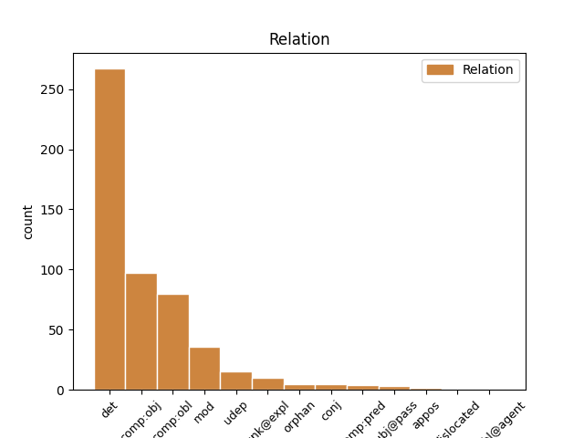
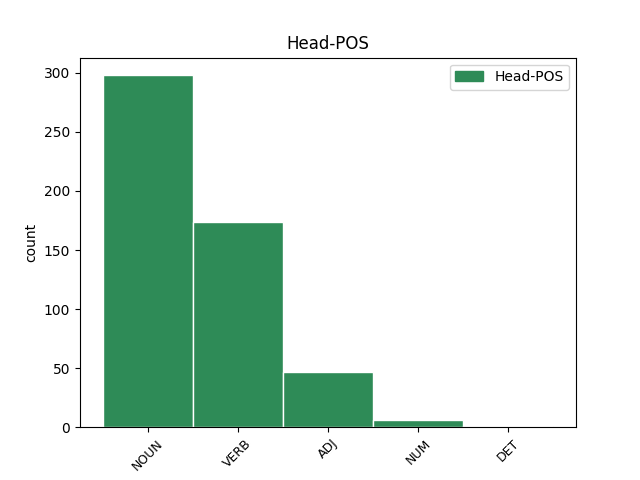
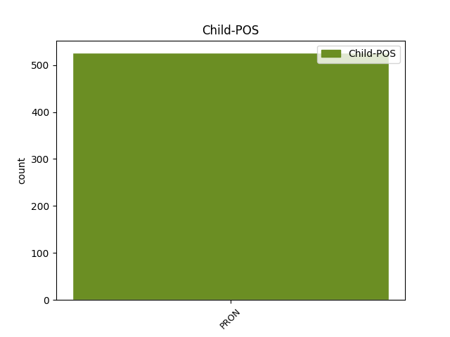

Distribution of features within this leaf



Agreement Rules sorted by frequency.
- When the dependent token is the determiner(det) of the head token, and the head token is NOUN and the dependent token is PRON.
1 in _ _ _ _ 0 _ _ _
2 þizozei saei PRON Pr Case=Gen|Gender=Fem|Number=Sing|PronType=Rel 3 det _ ref=TIT_1.13
3 fairinos fairina NOUN Nb Case=Gen|Gender=Fem|Number=Sing 0 _ _ _
4 gasak _ _ _ _ 0 _ _ _
5 ins _ _ _ _ 0 _ _ _
6 ƕassaba _ _ _ _ 0 _ _ _
7 ei _ _ _ _ 0 _ _ _
8 hailai _ _ _ _ 0 _ _ _
9 sijaina _ _ _ _ 0 _ _ _
10 in _ _ _ _ 0 _ _ _
11 galaubeinai _ _ _ _ 0 _ _ _
12 ni _ _ _ _ 0 _ _ _
13 atsaiƕandans _ _ _ _ 0 _ _ _
14 judaiwiskaize _ _ _ _ 0 _ _ _
15 spilli _ _ _ _ 0 _ _ _
16 jah _ _ _ _ 0 _ _ _
17 anabusne _ _ _ _ 0 _ _ _
18 manne _ _ _ _ 0 _ _ _
19 afwandjandane _ _ _ _ 0 _ _ _
20 sis _ _ _ _ 0 _ _ _
21 sunja _ _ _ _ 0 _ _ _
1 aþþan _ _ _ _ 0 _ _ _
2 bidjam _ _ _ _ 0 _ _ _
3 izwis _ _ _ _ 0 _ _ _
4 broþrjus _ _ _ _ 0 _ _ _
5 kunnan _ _ _ _ 0 _ _ _
6 þans _ _ _ _ 0 _ _ _
7 arbaidjandans _ _ _ _ 0 _ _ _
8 in _ _ _ _ 0 _ _ _
9 izwis _ _ _ _ 0 _ _ _
10 jah _ _ _ _ 0 _ _ _
11 faurstassjans _ _ _ _ 0 _ _ _
12 izwarans _ _ _ _ 0 _ _ _
13 in _ _ _ _ 0 _ _ _
14 fraujin _ _ _ _ 0 _ _ _
15 jah _ _ _ _ 0 _ _ _
16 talzjandans talzjan VERB V- Case=Acc|Gender=Masc|Number=Plur|Strength=Weak|Tense=Pres|VerbForm=Part|Voice=Act 0 _ _ _
17 izwis jūs PRON Pp Case=Acc|Gender=Masc|Number=Plur|Person=2|PronType=Prs 16 comp:obj _ ref=1THESS_5.12
18 jah _ _ _ _ 0 _ _ _
19 sweraiþ _ _ _ _ 0 _ _ _
20 ins _ _ _ _ 0 _ _ _
21 ufarassau _ _ _ _ 0 _ _ _
22 in _ _ _ _ 0 _ _ _
23 friaþwai _ _ _ _ 0 _ _ _
24 in _ _ _ _ 0 _ _ _
25 waurstwis _ _ _ _ 0 _ _ _
26 ize _ _ _ _ 0 _ _ _
27 jah _ _ _ _ 0 _ _ _
28 gawairþi _ _ _ _ 0 _ _ _
29 habaiþ _ _ _ _ 0 _ _ _
30 in _ _ _ _ 0 _ _ _
31 izwis _ _ _ _ 0 _ _ _
1 aþþan _ _ _ _ 0 _ _ _
2 nu _ _ _ _ 0 _ _ _
3 at _ _ _ _ 0 _ _ _
4 qimandin _ _ _ _ 0 _ _ _
5 Teimauþaiu _ _ _ _ 0 _ _ _
6 at _ _ _ _ 0 _ _ _
7 unsis _ _ _ _ 0 _ _ _
8 fram _ _ _ _ 0 _ _ _
9 izwis _ _ _ _ 0 _ _ _
10 jah _ _ _ _ 0 _ _ _
11 gateihandin ga-teihan VERB V- Case=Dat|Gender=Masc|Number=Sing|Strength=Weak|Tense=Pres|VerbForm=Part|Voice=Act 0 _ _ _
12 uns weis PRON Pp Case=Dat|Gender=Masc|Number=Plur|Person=1|PronType=Prs 11 comp:obl _ ref=1THESS_3.6
13 galaubein _ _ _ _ 0 _ _ _
14 jah _ _ _ _ 0 _ _ _
15 friaþwa _ _ _ _ 0 _ _ _
16 izwara _ _ _ _ 0 _ _ _
17 jah _ _ _ _ 0 _ _ _
18 þatei _ _ _ _ 0 _ _ _
19 gaminþi _ _ _ _ 0 _ _ _
20 unsar _ _ _ _ 0 _ _ _
21 habaiþ _ _ _ _ 0 _ _ _
22 god _ _ _ _ 0 _ _ _
23 sinteino _ _ _ _ 0 _ _ _
24 gairnjandans _ _ _ _ 0 _ _ _
25 uns _ _ _ _ 0 _ _ _
26 gasaiƕan _ _ _ _ 0 _ _ _
27 swaswe _ _ _ _ 0 _ _ _
28 jah _ _ _ _ 0 _ _ _
29 weis _ _ _ _ 0 _ _ _
30 izwis _ _ _ _ 0 _ _ _
31 in _ _ _ _ 0 _ _ _
32 uh _ _ _ _ 0 _ _ _
33 þis _ _ _ _ 0 _ _ _
34 gaþrafstidai _ _ _ _ 0 _ _ _
35 sijum _ _ _ _ 0 _ _ _
36 broþrjus _ _ _ _ 0 _ _ _
37 fram _ _ _ _ 0 _ _ _
38 izwis _ _ _ _ 0 _ _ _
39 ana _ _ _ _ 0 _ _ _
40 allai _ _ _ _ 0 _ _ _
41 nauþai _ _ _ _ 0 _ _ _
42 jah _ _ _ _ 0 _ _ _
43 aglon _ _ _ _ 0 _ _ _
44 unsarai _ _ _ _ 0 _ _ _
45 in _ _ _ _ 0 _ _ _
46 izwaraizos _ _ _ _ 0 _ _ _
47 galaubeinais _ _ _ _ 0 _ _ _
1 þiuþido þiuþjan VERB V- Aspect=Perf|Case=Nom|Gender=Fem|Number=Sing|Strength=Weak|Tense=Past|VerbForm=Part|Voice=Pass 0 _ _ _
2 þu þu PRON Pp Case=Nom|Gender=Fem|Number=Sing|Person=2|PronType=Prs 1 subj@pass _ ref=LUKE_1.42
3 in _ _ _ _ 0 _ _ _
4 qinom _ _ _ _ 0 _ _ _
5 jah _ _ _ _ 0 _ _ _
6 þiuþido _ _ _ _ 0 _ _ _
7 akran _ _ _ _ 0 _ _ _
8 qiþaus _ _ _ _ 0 _ _ _
9 þeinis _ _ _ _ 0 _ _ _
1 unte _ _ _ _ 0 _ _ _
2 ni _ _ _ _ 0 _ _ _
3 sokja _ _ _ _ 0 _ _ _
4 izwaros _ _ _ _ 0 _ _ _
5 aihtins aihts NOUN Nb Case=Acc|Gender=Fem|Number=Plur 0 _ _ _
6 ak _ _ _ _ 0 _ _ _
7 izwis jūs PRON Pp Case=Acc|Gender=Masc|Number=Plur|Person=2|PronType=Prs 5 conj _ ref=2COR_12.14
1 jah _ _ _ _ 0 _ _ _
2 biþe _ _ _ _ 0 _ _ _
3 usfulnodedun _ _ _ _ 0 _ _ _
4 dagos _ _ _ _ 0 _ _ _
5 hraineinais hraineins NOUN Nb Case=Gen|Gender=Fem|Number=Sing 0 _ _ _
6 ize is PRON Pp Case=Gen|Gender=Masc|Number=Plur|Person=3|PronType=Prs 5 mod _ ref=LUKE_2.22
7 bi _ _ _ _ 0 _ _ _
8 witoda _ _ _ _ 0 _ _ _
9 Mosezis _ _ _ _ 0 _ _ _
10 brahtedun _ _ _ _ 0 _ _ _
11 ina _ _ _ _ 0 _ _ _
12 in _ _ _ _ 0 _ _ _
13 Iairusalem _ _ _ _ 0 _ _ _
14 atsatjan _ _ _ _ 0 _ _ _
15 faura _ _ _ _ 0 _ _ _
16 fraujin _ _ _ _ 0 _ _ _
17 swaswe _ _ _ _ 0 _ _ _
18 gamelid _ _ _ _ 0 _ _ _
19 ist _ _ _ _ 0 _ _ _
20 in _ _ _ _ 0 _ _ _
21 witoda _ _ _ _ 0 _ _ _
22 fraujins _ _ _ _ 0 _ _ _
23 þatei _ _ _ _ 0 _ _ _
24 ƕazuh _ _ _ _ 0 _ _ _
25 gumakundaize _ _ _ _ 0 _ _ _
26 uslukands _ _ _ _ 0 _ _ _
27 qiþu _ _ _ _ 0 _ _ _
28 weihs _ _ _ _ 0 _ _ _
29 fraujins _ _ _ _ 0 _ _ _
30 haitada _ _ _ _ 0 _ _ _
31 jah _ _ _ _ 0 _ _ _
32 ei _ _ _ _ 0 _ _ _
33 gebeina _ _ _ _ 0 _ _ _
34 fram _ _ _ _ 0 _ _ _
35 imma _ _ _ _ 0 _ _ _
36 hunsl _ _ _ _ 0 _ _ _
37 swaswe _ _ _ _ 0 _ _ _
38 qiþan _ _ _ _ 0 _ _ _
39 ist _ _ _ _ 0 _ _ _
40 in _ _ _ _ 0 _ _ _
41 witoda _ _ _ _ 0 _ _ _
42 fraujins _ _ _ _ 0 _ _ _
43 gajuk _ _ _ _ 0 _ _ _
44 hraiwadubono _ _ _ _ 0 _ _ _
45 aiþþau _ _ _ _ 0 _ _ _
46 twos _ _ _ _ 0 _ _ _
47 juggons _ _ _ _ 0 _ _ _
48 ahake _ _ _ _ 0 _ _ _
1 unte _ _ _ _ 0 _ _ _
2 us _ _ _ _ 0 _ _ _
3 þaim _ _ _ _ 0 _ _ _
4 sind _ _ _ _ 0 _ _ _
5 þaiei _ _ _ _ 0 _ _ _
6 sliupand _ _ _ _ 0 _ _ _
7 in _ _ _ _ 0 _ _ _
8 gardins _ _ _ _ 0 _ _ _
9 jah _ _ _ _ 0 _ _ _
10 frahunþana _ _ _ _ 0 _ _ _
11 tiuhand _ _ _ _ 0 _ _ _
12 qineina _ _ _ _ 0 _ _ _
13 afhlaþana _ _ _ _ 0 _ _ _
14 frawaurhtim _ _ _ _ 0 _ _ _
15 þoei _ _ _ _ 0 _ _ _
16 tiuhanda _ _ _ _ 0 _ _ _
17 du _ _ _ _ 0 _ _ _
18 lustum _ _ _ _ 0 _ _ _
19 missaleikaim _ _ _ _ 0 _ _ _
20 sinteino _ _ _ _ 0 _ _ _
21 laisjandona laisjan VERB V- Case=Acc|Gender=Neut|Number=Plur|Strength=Weak|Tense=Pres|VerbForm=Part|Voice=Act 0 _ _ _
22 sik sik PRON Pk Case=Acc|Gender=Neut|Number=Plur|Person=3|PronType=Prs|Reflex=Yes 21 unk@expl _ ref=2TIM_3.7
23 jan _ _ _ _ 0 _ _ _
24 ni _ _ _ _ 0 _ _ _
25 aiw _ _ _ _ 0 _ _ _
26 ƕanhun _ _ _ _ 0 _ _ _
27 in _ _ _ _ 0 _ _ _
28 ufkunþja _ _ _ _ 0 _ _ _
29 sunjos _ _ _ _ 0 _ _ _
30 qiman _ _ _ _ 0 _ _ _
31 mahteiga _ _ _ _ 0 _ _ _
1 in _ _ _ _ 0 _ _ _
2 þizei _ _ _ _ 0 _ _ _
3 aflagjandans _ _ _ _ 0 _ _ _
4 liugn _ _ _ _ 0 _ _ _
5 rodjaiþ _ _ _ _ 0 _ _ _
6 sunja _ _ _ _ 0 _ _ _
7 ƕarjizuh _ _ _ _ 0 _ _ _
8 miþ _ _ _ _ 0 _ _ _
9 neƕundjin _ _ _ _ 0 _ _ _
10 seinamma _ _ _ _ 0 _ _ _
11 unte _ _ _ _ 0 _ _ _
12 sijum _ _ _ _ 0 _ _ _
13 anþar anþar PRON Pc Case=Nom|Gender=Masc|Number=Sing|PronType=Rcp 15 comp:pred _ ref=EPH_4.25
14 anþaris _ _ _ _ 0 _ _ _
15 liþus liþus NOUN Nb Case=Nom|Gender=Masc|Number=Sing 0 _ _ _
1 aþþan _ _ _ _ 0 _ _ _
2 nu _ _ _ _ 0 _ _ _
3 at _ _ _ _ 0 _ _ _
4 qimandin _ _ _ _ 0 _ _ _
5 Teimauþaiu _ _ _ _ 0 _ _ _
6 at _ _ _ _ 0 _ _ _
7 unsis _ _ _ _ 0 _ _ _
8 fram _ _ _ _ 0 _ _ _
9 izwis _ _ _ _ 0 _ _ _
10 jah _ _ _ _ 0 _ _ _
11 gateihandin _ _ _ _ 0 _ _ _
12 uns _ _ _ _ 0 _ _ _
13 galaubein _ _ _ _ 0 _ _ _
14 jah _ _ _ _ 0 _ _ _
15 friaþwa _ _ _ _ 0 _ _ _
16 izwara _ _ _ _ 0 _ _ _
17 jah _ _ _ _ 0 _ _ _
18 þatei _ _ _ _ 0 _ _ _
19 gaminþi _ _ _ _ 0 _ _ _
20 unsar _ _ _ _ 0 _ _ _
21 habaiþ _ _ _ _ 0 _ _ _
22 god _ _ _ _ 0 _ _ _
23 sinteino _ _ _ _ 0 _ _ _
24 gairnjandans gairnjan VERB V- Case=Nom|Gender=Masc|Number=Plur|Strength=Weak|Tense=Pres|VerbForm=Part|Voice=Act 0 _ _ _
25 uns _ _ _ _ 0 _ _ _
26 gasaiƕan _ _ _ _ 0 _ _ _
27 swaswe _ _ _ _ 0 _ _ _
28 jah _ _ _ _ 0 _ _ _
29 weis weis PRON Pp Case=Nom|Gender=Masc|Number=Plur|Person=1|PronType=Prs 24 udep _ ref=1THESS_3.6
30 izwis _ _ _ _ 0 _ _ _
31 in _ _ _ _ 0 _ _ _
32 uh _ _ _ _ 0 _ _ _
33 þis _ _ _ _ 0 _ _ _
34 gaþrafstidai _ _ _ _ 0 _ _ _
35 sijum _ _ _ _ 0 _ _ _
36 broþrjus _ _ _ _ 0 _ _ _
37 fram _ _ _ _ 0 _ _ _
38 izwis _ _ _ _ 0 _ _ _
39 ana _ _ _ _ 0 _ _ _
40 allai _ _ _ _ 0 _ _ _
41 nauþai _ _ _ _ 0 _ _ _
42 jah _ _ _ _ 0 _ _ _
43 aglon _ _ _ _ 0 _ _ _
44 unsarai _ _ _ _ 0 _ _ _
45 in _ _ _ _ 0 _ _ _
46 izwaraizos _ _ _ _ 0 _ _ _
47 galaubeinais _ _ _ _ 0 _ _ _
1 ik _ _ _ _ 0 _ _ _
2 allis _ _ _ _ 0 _ _ _
3 izwis _ _ _ _ 0 _ _ _
4 watin _ _ _ _ 0 _ _ _
5 daupja _ _ _ _ 0 _ _ _
6 iþ _ _ _ _ 0 _ _ _
7 gaggiþ _ _ _ _ 0 _ _ _
8 swinþoza _ _ _ _ 0 _ _ _
9 mis _ _ _ _ 0 _ _ _
10 þizei saei PRON Pr Case=Gen|Gender=Masc|Number=Sing|PronType=Rel 17 dislocated _ ref=LUKE_3.16
11 ik _ _ _ _ 0 _ _ _
12 ni _ _ _ _ 0 _ _ _
13 im _ _ _ _ 0 _ _ _
14 wairþs _ _ _ _ 0 _ _ _
15 andbindan _ _ _ _ 0 _ _ _
16 skaudaraip _ _ _ _ 0 _ _ _
17 skohis skohs NOUN Nb Case=Gen|Gender=Masc|Number=Sing 0 _ _ _
18 is _ _ _ _ 0 _ _ _
1 jaþ _ _ _ _ 0 _ _ _
2 þan _ _ _ _ 0 _ _ _
3 jabai _ _ _ _ 0 _ _ _
4 stoja _ _ _ _ 0 _ _ _
5 ik _ _ _ _ 0 _ _ _
6 staua _ _ _ _ 0 _ _ _
7 meina _ _ _ _ 0 _ _ _
8 sunjeina _ _ _ _ 0 _ _ _
9 ist _ _ _ _ 0 _ _ _
10 unte _ _ _ _ 0 _ _ _
11 ains ains NUM Ma Case=Nom|Gender=Masc|Number=Sing 0 _ _ _
12 ni _ _ _ _ 0 _ _ _
13 im _ _ _ _ 0 _ _ _
14 ak _ _ _ _ 0 _ _ _
15 ik ik PRON Pp Case=Nom|Gender=Masc|Number=Sing|Person=1|PronType=Prs 11 conj _ ref=JOHN_8.16
16 jah _ _ _ _ 0 _ _ _
17 saei _ _ _ _ 0 _ _ _
18 sandida _ _ _ _ 0 _ _ _
19 mik _ _ _ _ 0 _ _ _
20 atta _ _ _ _ 0 _ _ _
1 iþ _ _ _ _ 0 _ _ _
2 mis _ _ _ _ 0 _ _ _
3 ni _ _ _ _ 0 _ _ _
4 sijai _ _ _ _ 0 _ _ _
5 ƕopan _ _ _ _ 0 _ _ _
6 ni _ _ _ _ 0 _ _ _
7 in _ _ _ _ 0 _ _ _
8 waihtai _ _ _ _ 0 _ _ _
9 niba _ _ _ _ 0 _ _ _
10 in _ _ _ _ 0 _ _ _
11 galgins _ _ _ _ 0 _ _ _
12 fraujins _ _ _ _ 0 _ _ _
13 unsaris _ _ _ _ 0 _ _ _
14 Iesuis _ _ _ _ 0 _ _ _
15 Xristaus _ _ _ _ 0 _ _ _
16 þairh _ _ _ _ 0 _ _ _
17 þanei _ _ _ _ 0 _ _ _
18 mis _ _ _ _ 0 _ _ _
19 fairƕus _ _ _ _ 0 _ _ _
20 ushramiþs us-hramjan VERB V- Aspect=Perf|Case=Nom|Gender=Masc|Number=Sing|Strength=Strong|Tense=Past|VerbForm=Part|Voice=Pass 0 _ _ _
21 ist _ _ _ _ 0 _ _ _
22 jah _ _ _ _ 0 _ _ _
23 ik ik PRON Pp Case=Nom|Gender=Masc|Number=Sing|Person=1|PronType=Prs 20 conj _ ref=GAL_6.14
24 fairƕau _ _ _ _ 0 _ _ _
1 Jabai _ _ _ _ 0 _ _ _
2 ƕo _ _ _ _ 0 _ _ _
3 nu _ _ _ _ 0 _ _ _
4 gaþrafsteino _ _ _ _ 0 _ _ _
5 in _ _ _ _ 0 _ _ _
6 Xristau _ _ _ _ 0 _ _ _
7 jabai _ _ _ _ 0 _ _ _
8 ƕo _ _ _ _ 0 _ _ _
9 gaþlaihte _ _ _ _ 0 _ _ _
10 friaþwos _ _ _ _ 0 _ _ _
11 jabai _ _ _ _ 0 _ _ _
12 ƕo _ _ _ _ 0 _ _ _
13 gamainduþe _ _ _ _ 0 _ _ _
14 ahmins _ _ _ _ 0 _ _ _
15 jabai _ _ _ _ 0 _ _ _
16 ƕo _ _ _ _ 0 _ _ _
17 mildiþo _ _ _ _ 0 _ _ _
18 jah _ _ _ _ 0 _ _ _
19 gableiþeino _ _ _ _ 0 _ _ _
20 usfulleiþ _ _ _ _ 0 _ _ _
21 meina _ _ _ _ 0 _ _ _
22 fahed _ _ _ _ 0 _ _ _
23 ei _ _ _ _ 0 _ _ _
24 þata _ _ _ _ 0 _ _ _
25 samo _ _ _ _ 0 _ _ _
26 hugjaiþ _ _ _ _ 0 _ _ _
27 þo _ _ _ _ 0 _ _ _
28 samon _ _ _ _ 0 _ _ _
29 friaþwa _ _ _ _ 0 _ _ _
30 habandans _ _ _ _ 0 _ _ _
31 samasaiwalai _ _ _ _ 0 _ _ _
32 samafraþjai _ _ _ _ 0 _ _ _
33 ni _ _ _ _ 0 _ _ _
34 waiht _ _ _ _ 0 _ _ _
35 bi _ _ _ _ 0 _ _ _
36 haifstai _ _ _ _ 0 _ _ _
37 aiþþau _ _ _ _ 0 _ _ _
38 lausai _ _ _ _ 0 _ _ _
39 hauheinai _ _ _ _ 0 _ _ _
40 ak _ _ _ _ 0 _ _ _
41 in _ _ _ _ 0 _ _ _
42 allai _ _ _ _ 0 _ _ _
43 hauneinai _ _ _ _ 0 _ _ _
44 gahugdais _ _ _ _ 0 _ _ _
45 anþar anþar PRON Pc Case=Nom|Gender=Masc|Number=Sing|PronType=Rcp 47 comp:pred _ ref=PHIL_2.3
46 anþarana _ _ _ _ 0 _ _ _
47 munands munan VERB V- Case=Nom|Gender=Masc|Number=Sing|Strength=Strong|Tense=Pres|VerbForm=Part|Voice=Act 0 _ _ _
48 sis _ _ _ _ 0 _ _ _
49 auhuman _ _ _ _ 0 _ _ _
50 ni _ _ _ _ 0 _ _ _
51 þo _ _ _ _ 0 _ _ _
52 seina _ _ _ _ 0 _ _ _
53 ƕarjizuh _ _ _ _ 0 _ _ _
54 mitondans _ _ _ _ 0 _ _ _
55 ak _ _ _ _ 0 _ _ _
56 jah _ _ _ _ 0 _ _ _
57 þo _ _ _ _ 0 _ _ _
58 anþaraize _ _ _ _ 0 _ _ _
59 ƕarjizuh _ _ _ _ 0 _ _ _
1 jah _ _ _ _ 0 _ _ _
2 guþ _ _ _ _ 0 _ _ _
3 ƕaiwa _ _ _ _ 0 _ _ _
4 weihaba _ _ _ _ 0 _ _ _
5 jah _ _ _ _ 0 _ _ _
6 garaihtaba _ _ _ _ 0 _ _ _
7 jah _ _ _ _ 0 _ _ _
8 unfairinodaba _ _ _ _ 0 _ _ _
9 izwis _ _ _ _ 0 _ _ _
10 þaim _ _ _ _ 0 _ _ _
11 galaubjandam _ _ _ _ 0 _ _ _
12 wesum _ _ _ _ 0 _ _ _
13 swaswe _ _ _ _ 0 _ _ _
14 wituþ _ _ _ _ 0 _ _ _
15 ainƕarjanoh ainƕarjizuh ADJ Px Case=Acc|Gender=Masc|Number=Sing 0 _ _ _
16 izwara _ _ _ _ 0 _ _ _
17 swe _ _ _ _ 0 _ _ _
18 atta _ _ _ _ 0 _ _ _
19 barna _ _ _ _ 0 _ _ _
20 seina _ _ _ _ 0 _ _ _
21 bidjandans _ _ _ _ 0 _ _ _
22 izwis jūs PRON Pp Case=Acc|Gender=Masc|Number=Plur|Person=2|PronType=Prs 15 appos _ ref=1THESS_2.11
23 jah _ _ _ _ 0 _ _ _
24 gaþlaihandans _ _ _ _ 0 _ _ _
25 jah _ _ _ _ 0 _ _ _
26 weitwodjandans _ _ _ _ 0 _ _ _
27 du _ _ _ _ 0 _ _ _
28 gaggan _ _ _ _ 0 _ _ _
29 izwis _ _ _ _ 0 _ _ _
30 wairþaba _ _ _ _ 0 _ _ _
31 gudis _ _ _ _ 0 _ _ _
32 saei _ _ _ _ 0 _ _ _
33 laþoda _ _ _ _ 0 _ _ _
34 izwis _ _ _ _ 0 _ _ _
35 du _ _ _ _ 0 _ _ _
36 seinai _ _ _ _ 0 _ _ _
37 þiudangardjai _ _ _ _ 0 _ _ _
38 jah _ _ _ _ 0 _ _ _
39 wulþau _ _ _ _ 0 _ _ _
1 awiliudon _ _ _ _ 0 _ _ _
2 skulum _ _ _ _ 0 _ _ _
3 guda _ _ _ _ 0 _ _ _
4 sinteino _ _ _ _ 0 _ _ _
5 in _ _ _ _ 0 _ _ _
6 izwara _ _ _ _ 0 _ _ _
7 broþrjus _ _ _ _ 0 _ _ _
8 swaswe _ _ _ _ 0 _ _ _
9 wairþ _ _ _ _ 0 _ _ _
10 ist _ _ _ _ 0 _ _ _
11 unte _ _ _ _ 0 _ _ _
12 ufarwahseiþ _ _ _ _ 0 _ _ _
13 galaubeins _ _ _ _ 0 _ _ _
14 izwara _ _ _ _ 0 _ _ _
15 jah _ _ _ _ 0 _ _ _
16 managniþ _ _ _ _ 0 _ _ _
17 friaþwa _ _ _ _ 0 _ _ _
18 ainƕarjizuh ainƕarjizuh DET Px Case=Gen|Gender=Masc|Number=Sing 0 _ _ _
19 allaize _ _ _ _ 0 _ _ _
20 izwara jūs PRON Pp Case=Gen|Gender=Masc|Number=Plur|Person=2|PronType=Prs 18 mod _ ref=2THESS_1.3
21 in _ _ _ _ 0 _ _ _
22 izwis _ _ _ _ 0 _ _ _
23 misso _ _ _ _ 0 _ _ _
Disagree Examples:
1 jah _ _ _ _ 0 _ _ _
2 gasaiƕands _ _ _ _ 0 _ _ _
3 Iesus _ _ _ _ 0 _ _ _
4 galaubein galaubeins NOUN Nb Case=Acc|Gender=Fem|Number=Sing 0 _ _ _
5 ize is PRON Pp Case=Gen|Gender=Masc|Number=Plur|Person=3|PronType=Prs 4 det _ ref=MATT_9.2
6 qaþ _ _ _ _ 0 _ _ _
7 du _ _ _ _ 0 _ _ _
8 þamma _ _ _ _ 0 _ _ _
9 usliþin _ _ _ _ 0 _ _ _
1 jah _ _ _ _ 0 _ _ _
2 witands _ _ _ _ 0 _ _ _
3 Iesus _ _ _ _ 0 _ _ _
4 þos _ _ _ _ 0 _ _ _
5 mitonins mitons NOUN Nb Case=Acc|Gender=Fem|Number=Plur 0 _ _ _
6 ize is PRON Pp Case=Gen|Gender=Masc|Number=Plur|Person=3|PronType=Prs 5 det _ ref=MATT_9.4
7 qaþ _ _ _ _ 0 _ _ _
1 jah _ _ _ _ 0 _ _ _
2 warþ _ _ _ _ 0 _ _ _
3 biþe _ _ _ _ 0 _ _ _
4 is _ _ _ _ 0 _ _ _
5 anakumbida _ _ _ _ 0 _ _ _
6 in _ _ _ _ 0 _ _ _
7 garda _ _ _ _ 0 _ _ _
8 jah _ _ _ _ 0 _ _ _
9 sai _ _ _ _ 0 _ _ _
10 managai _ _ _ _ 0 _ _ _
11 motarjos _ _ _ _ 0 _ _ _
12 jah _ _ _ _ 0 _ _ _
13 frawaurhtai _ _ _ _ 0 _ _ _
14 qimandans _ _ _ _ 0 _ _ _
15 miþanakumbidedun _ _ _ _ 0 _ _ _
16 Iesua _ _ _ _ 0 _ _ _
17 jah _ _ _ _ 0 _ _ _
18 siponjam siponeis NOUN Nb Case=Dat|Gender=Masc|Number=Plur 0 _ _ _
19 is is PRON Pp Case=Gen|Gender=Masc|Number=Sing|Person=3|PronType=Prs 18 det _ ref=MATT_9.10
1 jah _ _ _ _ 0 _ _ _
2 gaumjandans _ _ _ _ 0 _ _ _
3 Fareisaieis _ _ _ _ 0 _ _ _
4 qeþun _ _ _ _ 0 _ _ _
5 du _ _ _ _ 0 _ _ _
6 þaim _ _ _ _ 0 _ _ _
7 siponjam siponeis NOUN Nb Case=Dat|Gender=Masc|Number=Plur 0 _ _ _
8 is is PRON Pp Case=Gen|Gender=Masc|Number=Sing|Person=3|PronType=Prs 7 det _ ref=MATT_9.11
1 jah _ _ _ _ 0 _ _ _
2 urreisands _ _ _ _ 0 _ _ _
3 Iesus _ _ _ _ 0 _ _ _
4 iddja _ _ _ _ 0 _ _ _
5 afar _ _ _ _ 0 _ _ _
6 imma _ _ _ _ 0 _ _ _
7 jah _ _ _ _ 0 _ _ _
8 siponjos siponeis NOUN Nb Case=Nom|Gender=Masc|Number=Plur 0 _ _ _
9 is is PRON Pp Case=Gen|Gender=Masc|Number=Sing|Person=3|PronType=Prs 8 det _ ref=MATT_9.19